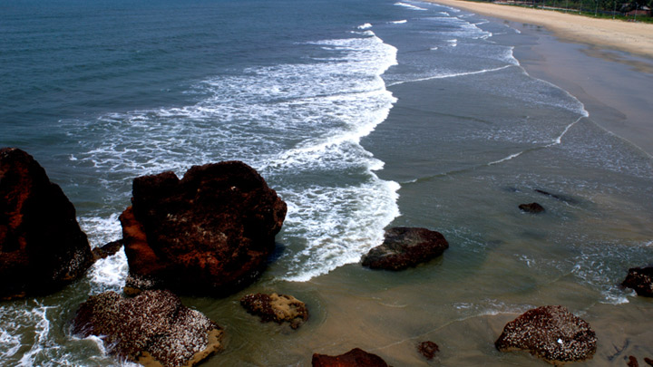
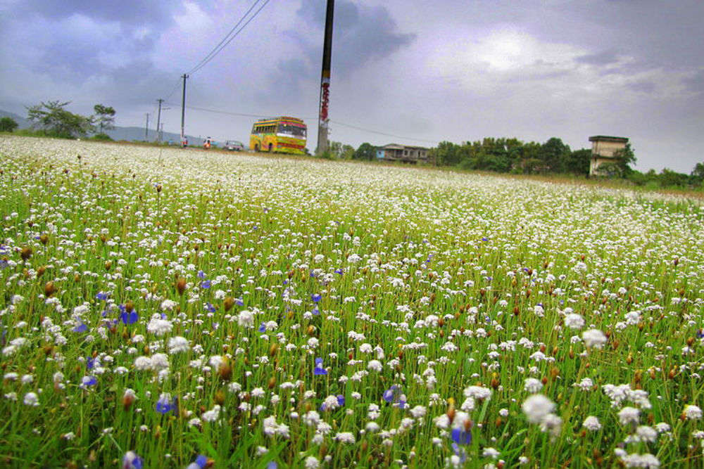

Payyambalam Beach
The impeccably unspoiled Payyabalam beach is adorned with sparkling pearls of golden sand and foamy white waves of the Arabian Sea. The highlight of Kannur and one of the many beautiful beaches of Kerala, the Payyabalam beach has an incredibly peaceful and inviting aura. Unwind after a long week by relaxing at this remarkable seashore and find yourself mesmerized by its elegant beauty and contagious calm. The approach to the beach is through a small crossover bridge that is built over a narrow canal. To the right of the bridge are the memorials of Kannur's important political personalities that had passed away over the recent decades.
Palm trees and casuarinas embellish the shores like an alluring garland in various shades of green. This pristine golden beach is not only great for relaxing and revitalizing yourself, but also for boating, swimming, and thrilling adventure activities! The rhythmic dance of the turquoise waters is so inviting that you are bound to be tempted to take a dip. Boating and indulging in some adventure sports will allow you to wade deeper into these alluring waters.
How to Get Here
Kannur is easily reachable both by rail and road. The Kannur Main Railway Station lies at a mere distance of 2.7 kms from Payyabalam Beach and sees a good frequency of trains pulling in and out. It is only 10 mins away from the beach, and you can get here by hiring a cab from outside the station. Cannanore Bus Stand is also very close by and has many government as well as private buses plying in and out quite often.
Muzhappilangad Drive-in Beach

Muzhappilangad Drive-in Beach is Kerala's only drive-in beach, situated about 5 km north of Thalassery and 15 km from Kannur. There is an unpaved road winding through coconut groves, leading to the beach. The beach is about 5 kilometres long and curves in a wide area providing a good view of Kannur beach on the north. To the South and about 200 metres away from the beach there is an island called the "Green Island" which adds to the allure of the beach. And another important point is that there are home stays and beach resort available in Muzhappilangad drive in Beach such as corniche Beach Resort, palm resort, sun villa and samudra and in all resorts you could get fresh home made food which are prepared from homes on orders they get from the visitors you can get Kerala style food Kannur and thalassery special food and you could get homely atmosphere.
How to Get Here
Thalassery is the nearest town to reach Muzhappilangad Beach by road. Since this town has a good network of roads, visitors from almost all the corners of Kerala can reach this beach without much hassles.Kannur at a distance of 15km has the nearest railway station to reach Muzhappilangad Beach by train. From Kannur, visitors can avail regular buses or private taxis to reach their favourite drive-in beach in Kerala.Karipur International Airport is the nearest airport to reach Muzhappilangad Beach by air. The airport is around 100km from the beach; regular buses and private cabs are available in and around the airport.
St. Angelo Fort

Built by the first Portuguese Viceroy in India, Don Francesco de Almeida (1505), St. Angelo’s Fort is among the most historic sites in Kannur. This massive triangular laterite structure is flanked by gigantic bastions that make for an imposing sight. It changed hands between the Dutch and eventually the British, who would remodel and reequip it into their primary military stronghold in Malabar.
Mopilla Bay and Dharamadam Island are among the primary attractions here. Mopilla Bay is a natural harbour and the fort offers a wonderful view of it along with a sea wall projecting from the fort separating the rough sea and inland water. Dharamadam Island, barely 5 acres in area, is 100 m from the mainland and a favourite haunt of tourists. People come to the fort for relaxing strolls and just a brilliant view of the Arabian Sea.
How to Get Here
Nearest railway station: Kannur, about 3 km away Nearest airport: Kannur International Airport, about 35 km away; Calicut International Airport, about 93 km away
Madayipara
Welcome to Madayipara, home to over 500 plant species, 300 flowering plants and rare breeds of butterflies. Drive down here and the locals will inform you of the seasonal beauties at this laterite hill. Many are used during major festivals in decorative styles across the State. The bio-diversity of the place has slowly helped it gain traction among tourists and nature lovers alike.
In ancient times, this place once served administrative centre of the Ezhimala kings. Remnants of time still lie in the area, including the Pazhi Kotta and are a great reminder of its rich history. Rulers are said to have had their coronations at this specific location, where four watchtowers still guard this former bastion. A pond in the shape of a hand held mirror, connected to ancient Jewish settlers, attracts visitors as well. The Vadukunda Siva Temple and a lake that lie nearby are popular as well. The lake is said to survive even in the hottest of summer months and feeds the local faunal inhabitants of the area.
How to Get Here
Nearest railway station: Pazhayangadi, about 2 km| Kannur, about 25 km Nearest airport: Kannur International Airport, about 50 km | Calicut International Airport, about 140 km